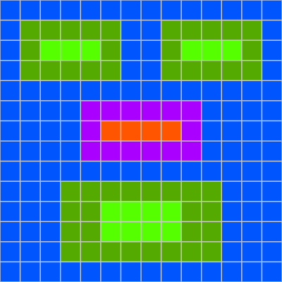

CUNY QCC NY CEO MicroCredential Software Engineering
Shariya George
Lab 6
Basic HTML Structure
TAGS:img src ="nameplate.png",link rel="icon" type="image/png" href="filename.png", div
07/19/2021
What exactly is a favicon?
A favicon is a small 16×16 pixel icon that serves as branding for your website. Its main purpose is to help visitors locate your page easier when they have multiple tabs open.A great example of favicon design is the Google logo. It works perfectly for bigger screens with its big 'G' and distinctive four-colour text. Here are images of some famous Favicons:


How are favicons created?
Back in 1999, the favicon was introduced in Internet Explorer as a way of helping searchers tell bookmarked web pages apart from others. And since bookmarked pages were (and probably still are) called “Favorites” in Internet Explorer, the words ‘favorite’ and ‘icon’ were blended together to create a new term.Nowadays, favicons are displayed right above the address bar regardless of whether the website is bookmarked or not and in the small chance that a website doesn’t have a favicon, the browser will display a generic browser symbol.
How did I create the favicon for this site?
First,I decided on the image length and width. I decided to set it to 14. Then, I chose the bits per pixel to equal 6. Then using binary I played around with different combinations unitll I go the colors I wanted. Finally, I saved the image of my Favicon.
My Icon in Binary
000111 000111 000111 000111 000111 000111 000111 000111 000111 000111 000111 000111 000111 000111 000111 011000 011000 011000 011000 011000 000111 000111 011000 011000 011000 011000 011000 000111 000111 011000 011100 011100 011100 011000 000111 000111 011000 011100 011100 011100 011000 000111 000111 011000 011000 011000 011000 011000 000111 000111 011000 011000 011000 011000 011000 000111 000111 000111 000111 000111 000111 000111 000111 000111 000111 000111 000111 000111 000111 000111 000111 000111 000111 000111 100011 100011 100011 100011 100011 100011 000111 000111 000111 000111 000111 000111 000111 000111 100011 110100 110100 110100 110100 100011 000111 000111 000111 000111 000111 000111 000111 000111 100011 100011 100011 100011 100011 100011 000111 000111 000111 000111 000111 000111 000111 000111 000111 000111 000111 000111 000111 000111 000111 000111 000111 000111 000111 000111 000111 011000 011000 011000 011000 011000 011000 011000 011000 000111 000111 000111 000111 000111 000111 011000 011000 011100 011100 011100 011100 011000 011000 000111 000111 000111 000111 000111 000111 011000 011000 011100 011100 011100 011100 011000 011000 000111 000111 000111 000111 000111 000111 011000 011000 011000 011000 011000 011000 011000 011000 000111 000111 000111 000111 000111 000111 000111 000111 000111 000111 000111 000111 000111 000111 000111 000111 000111 000111